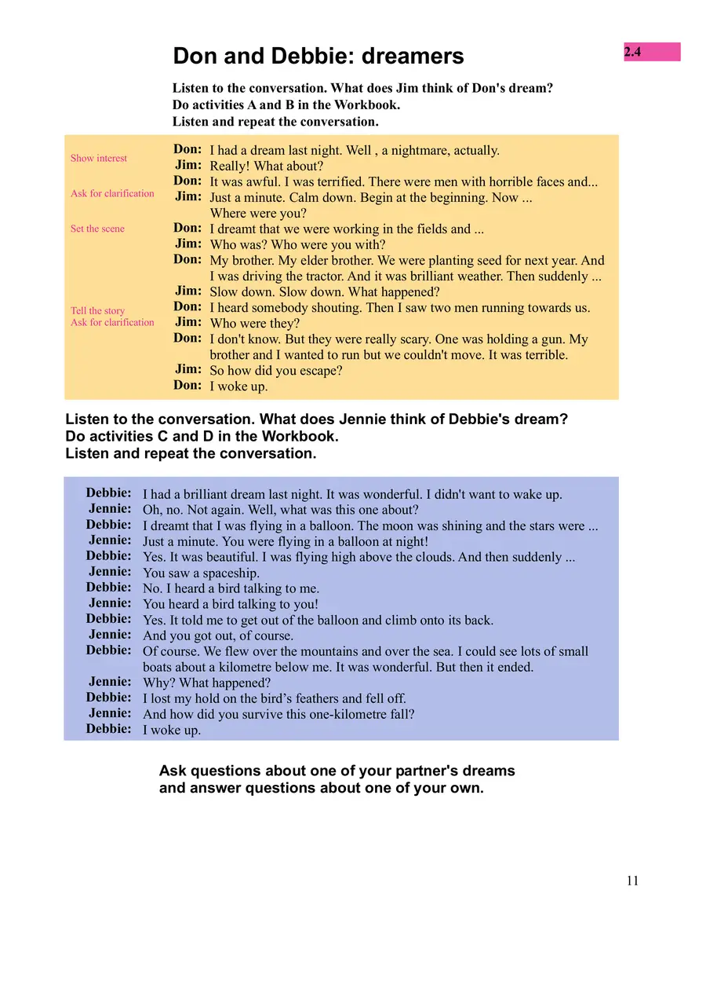

2.4 Don and Debbie: dreamers Listen to the conversation. What does Jim think of Don's dream? Do activities A and B in the Workbook. Listen and repeat the conversation.
[Show interest] Don: I had a dream last night. Well , a nightmare, actually. Jim: Really! What about? Don: It was awful. I was terrified. There were men with horrible faces and... [Ask for clarification] Jim: Just a minute. Calm down. Begin at the beginning. Now ... Where were you? [Set the scene] Don: I dreamt that we were working in the fields and ... Jim: Who was? Who were you with? Don: My brother. My elder brother. We were planting seed for next year. And I was driving the tractor. And it was brilliant weather. Then suddenly ... Jim: Slow down. Slow down. What happened? [Tell the story] Don: I heard somebody shouting. Then I saw two men running towards us. [Ask for clarification] Jim: Who were they? Don: I don't know. But they were really scary. One was holding a gun. My brother and I wanted to run but we couldn't move. It was terrible. Jim: So how did you escape? Don: I woke up.
Well , a nightmare وحُفظت حرفياً؛ كما تشير الهوامش الحمراء المرفقة إلى وظائف المحادثة الأربع: Show interest / Ask for clarification / Set the scene / Tell the story.Listen to the conversation. What does Jennie think of Debbie's dream? Do activities C and D in the Workbook. Listen and repeat the conversation. Debbie: I had a brilliant dream last night. It was wonderful. I didn't want to wake up. Jennie: Oh, no. Not again. Well, what was this one about? Debbie: I dreamt that I was flying in a balloon. The moon was shining and the stars were ... Jennie: Just a minute. You were flying in a balloon at night! Debbie: Yes. It was beautiful. I was flying high above the clouds. And then suddenly ... Jennie: You saw a spaceship. Debbie: No. I heard a bird talking to me. Jennie: You heard a bird talking to you! Debbie: Yes. It told me to get out of the balloon and climb onto its back. Jennie: And you got out, of course. Debbie: Of course. We flew over the mountains and over the sea. I could see lots of small boats about a kilometre below me. It was wonderful. But then it ended. Jennie: Why? What happened? Debbie: I lost my hold on the bird’s feathers and fell off. Jennie: And how did you survive this one-kilometre fall? Debbie: I woke up. Ask questions about one of your partner's dreams and answer questions about one of your own.
[
{
"letter": "1",
"word": "nightmare (a bad night's sleep / a frightening dream / a pleasant dream)",
"ar": "كابوس (حلم مزعج ومخيف)",
"answer": "1-b"
},
{
"letter": "2",
"word": "awful (very long / very bad / very good)",
"ar": "فظيع / سيّئ للغاية",
"answer": "2-b"
},
{
"letter": "3",
"word": "calm down (talk more clearly / stop being excited / stop being sad)",
"ar": "اهدأ / تخلّ عن الانفعال",
"answer": "3-b"
}
][
{
"num": 1,
"question": "Who was in the fields?",
"model_answer": "Don and his elder brother.",
"explain_ar": "في الحوار: I dreamt that we were working in the fields... My brother. My elder brother."
},
{
"num": 2,
"question": "Who was driving the tractor?",
"model_answer": "Don.",
"explain_ar": "قال دون: And I was driving the tractor."
},
{
"num": 3,
"question": "Who was holding a gun?",
"model_answer": "One of the two men (who were running towards Don and his brother).",
"explain_ar": "قال دون: I saw two men running towards us ... One was holding a gun."
},
{
"num": 4,
"question": "Why didn't they run away?",
"model_answer": "Because they couldn't move (they wanted to run but couldn't move).",
"explain_ar": "العبارة الحرفية: My brother and I wanted to run but we couldn't move."
},
{
"num": 5,
"question": "Which words or phrases tell you that the dream was unpleasant?",
"model_answer": "nightmare, awful, terrified, horrible faces, really scary, terrible.",
"explain_ar": "مجموعة الأوصاف السلبية الدالة على الرعب والضيق."
}
][
{
"letter": "1",
"word": "brilliant — a) very dark / d) very cold / c) very good",
"ar": "مبهر / ممتاز للغاية",
"answer": "1-c"
},
{
"letter": "2",
"word": "lost my hold on — a) could no longer hold / b) held tighter / c) pulled out",
"ar": "أفلتُّ قبضتي من",
"answer": "2-a"
}
][
{
"num": 1,
"question": "What was she flying in at the beginning of her dream?",
"model_answer": "A balloon.",
"explain_ar": "قالت: I dreamt that I was flying in a balloon."
},
{
"num": 2,
"question": "How did she fly over the mountains?",
"model_answer": "On a bird's back (holding on to its feathers).",
"explain_ar": "تسلقت إلى ظهر الطائر المتكلم وحلّقت فوق الجبال والبحر."
},
{
"num": 3,
"question": "How high did she fly?",
"model_answer": "High above the clouds (and about a kilometre above the small boats / sea).",
"explain_ar": "ذكرت عبارتين: high above the clouds وabout a kilometre below me (وsurvive this one-kilometre fall)."
},
{
"num": 4,
"question": "Which words or phrases tell you that the dream was very pleasant?",
"model_answer": "brilliant dream, wonderful, I didn't want to wake up, beautiful.",
"explain_ar": "تعابير السعادة والإعجاب طوال حوار ديبي."
}
]{
"pb_text_vs_image": "طُوبق النصان الكاملان في PB ص 11 مع صورة pb-13.png والهوامش الحمراء المرفقة: حُفظت المسافة الطباعية 'Well , a nightmare' حرفياً.",
"wb_ocr_vs_image": "قُورنت صفحتا WB ص 16–17 مع tesseract.js eng: أخرجت OCR رقم التمرين 'A' المطبوع خطأً بدلاً من 'B' في WB ص 17 (وتأكدت طباعته A في wb-018.png)، كما وردت المطبوعة 'd) very cold' بدلاً من 'b)' في C #1؛ وحُفظتا حرفياً مع التوضيح في REVIEW_NEEDED.md، وصُحّحت قراءات OCR مثل 'Ow)' و'Ceo' و'Jost' بصرياً."
}